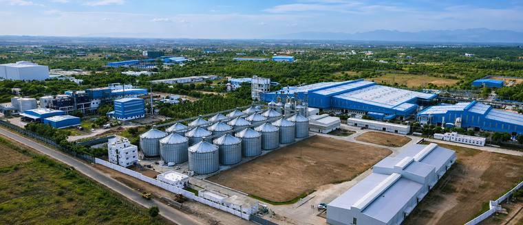
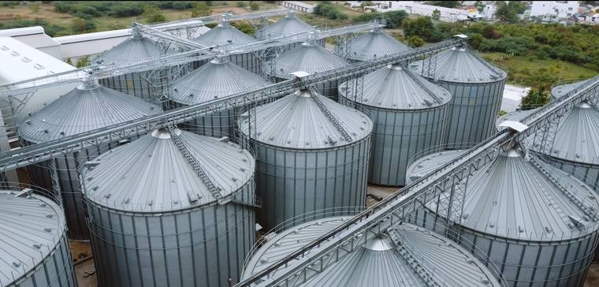
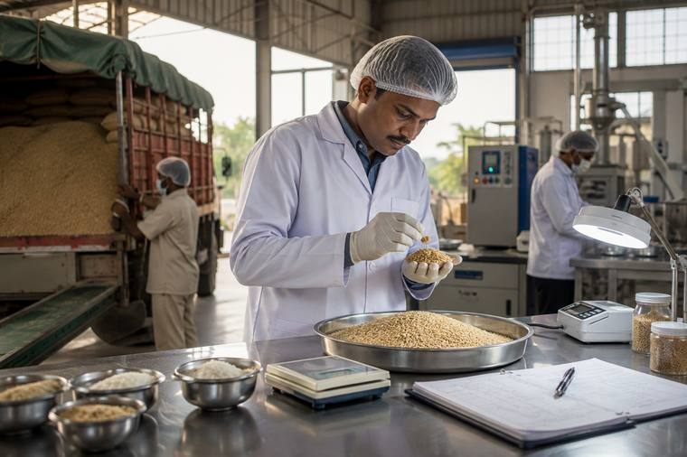
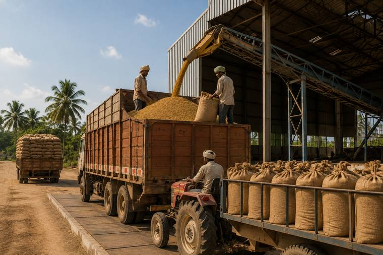

Chennai Rice Industries is powered by integrated infrastructure — controlled procurement, modern processing and monitored storage that protect purity and consistency in every grain.
From paddy intake to packaging, our integrated infrastructure protects grain condition and consistency at every step.

A ten-stage milling line — pre-cleaning, destoning, husking, whitening, grading and colour sorting.

21 silos across Nasiyanur and SIPCOT holding 61,500 MT of paddy under monitored conditions.

Moisture, purity and grain condition are checked at intake, in process and before dispatch.
Varieties are kept separate and traceable from the point of purchase through to storage.

Controlled handling from field to facility, and onward through warehouse to distribution.
Finished rice is packed and prepared for dispatch, with a final check before it leaves the facility.
Our infrastructure is the backbone of our promise to deliver the finest rice, always.